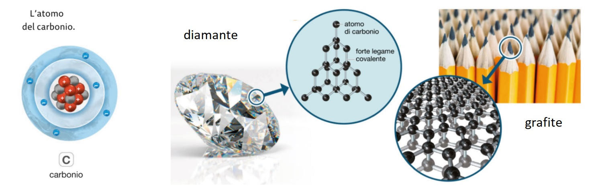
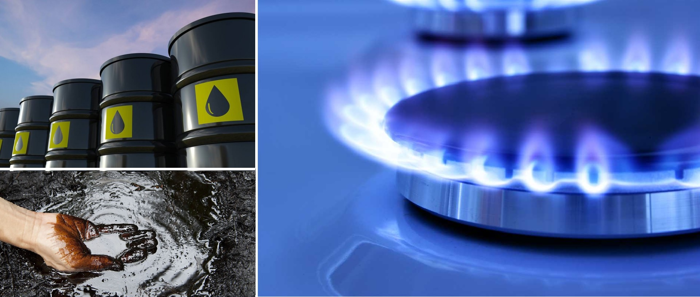

I Composti Organici
Benvenuto! Questa è un'applicazione interattiva per esplorare i mattoni fondamentali della vita. Inizieremo capendo cosa sono i composti organici e quali sono le loro categorie principali, per poi scoprire le molecole biologiche.
Inizia l'esplorazioneCosa sono i Composti Organici?
Il Ruolo Fondamentale del Carbonio (C)
La chimica organica è la chimica che studia i composti che contengono Carbonio (C).
Il Carbonio è l'elemento fondamentale della vita. Ha una capacità speciale: può formare 4 legami con altri atomi, permettendogli di creare catene lunghissime e molecole enormi e complesse (chiamate macromolecole). È come un mattoncino LEGO® speciale che si può collegare in 4 punti diversi.
I composti organici comprendono:
1. Gli Idrocarburi
Sono le molecole organiche più semplici.
Formati solo da Carbonio (C) e Idrogeno (H). Non si sciolgono in acqua. Esempi comuni sono il petrolio e il gas metano.
2. Gli Alcoli
Contengono anche Ossigeno (O).
Formati da Carbonio (C), Idrogeno (H) e Ossigeno (O). Hanno un gruppo-OH (ossidrile). L'alcol etilico (che si forma dalla fermentazione degli zuccheri) è l'esempio più famoso.

3. Le Molecole Biologiche
Le molecole della vita, grandi e complesse.
Sono i materiali costitutivi di tutti gli esseri viventi.
ApprofondisciLe 4 Molecole della Vita (Biomolecole)
Le molecole biologiche (o biomolecole) sono i composti organici più complessi e sono fondamentali per la vita. Si dividono in quattro grandi famiglie. Clicca su ogni scheda qui sotto per esplorare una famiglia.
Carboidrati (o Zuccheri)
La nostra fonte di energia principale.
Sono fatti di Carbonio, Idrogeno e Ossigeno.
CARBOIDRATI
1. Monosaccaridi
(1 pezzo - Semplici)
Es. Glucosio, Fruttosio (frutta 🍇)
2. Disaccaridi
(2 pezzi)
Es. Saccarosio (zucchero da cucina 🍚)
3. Polisaccaridi
(Molti pezzi - Complessi)
Es. Amido (pane 🍞, pasta 🍝)
Lipidi (o Grassi)
La nostra riserva di energia e isolamento dal freddo.
Non si sciolgono in acqua.
LIPIDI
Origine Animale 🥩
Ricchi di Grassi Saturi
Es. Burro 🧈, Lardo
Origine Vegetale 🌿
Ricchi di Grassi Insaturi
Es. Olio 🫒, Noci 🥜, Avocado 🥑
La differenza tra i due è data dalla presenza di Grassi Saturi (più solidi) o Insaturi (più liquidi).
Proteine
Sono i "mattoni" 🧱 che costruiscono il nostro corpo.
Sono fatte da 20 tipi di pezzi più piccoli, chiamati Amminoacidi.
Svolgono tantissime funzioni. Esempi:
Funzione Strutturale
Costruiscono il corpo.
Es: Capelli, Unghie, Muscoli
Funzione Enzimatica
Accelerano le reazioni chimiche.
Es: Digestione del cibo
Funzione di Trasporto
Spostano sostanze nel corpo.
Es: Emoglobina (trasporta ossigeno)
Funzione di Difesa
Ci proteggono dalle malattie.
Es: Anticorpi
Acidi Nucleici
Contengono le "istruzioni" 🗃️ per far funzionare la cellula.
Sono fatti da pezzi più piccoli, chiamati Nucleotidi.
Ce ne sono due tipi principali:
DNA
È il "capo".
Contiene tutte le informazioni ereditarie (il "progetto" per costruire un organismo).
RNA
È il "messaggero".
Legge le istruzioni del DNA e le usa per costruire le proteine.